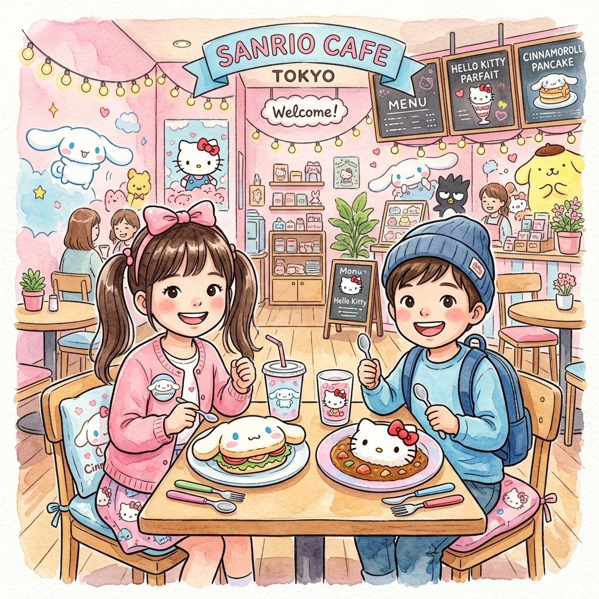
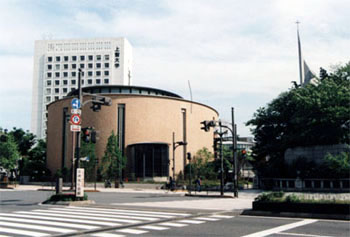
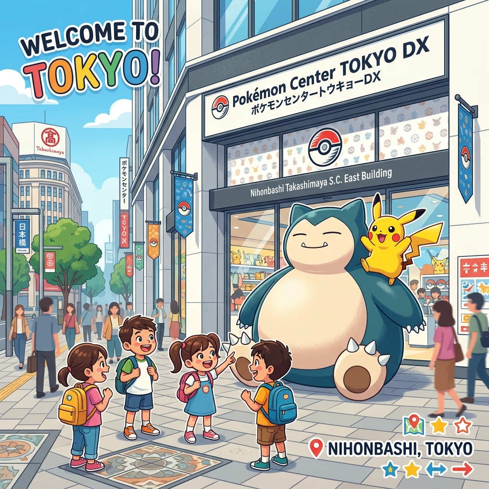
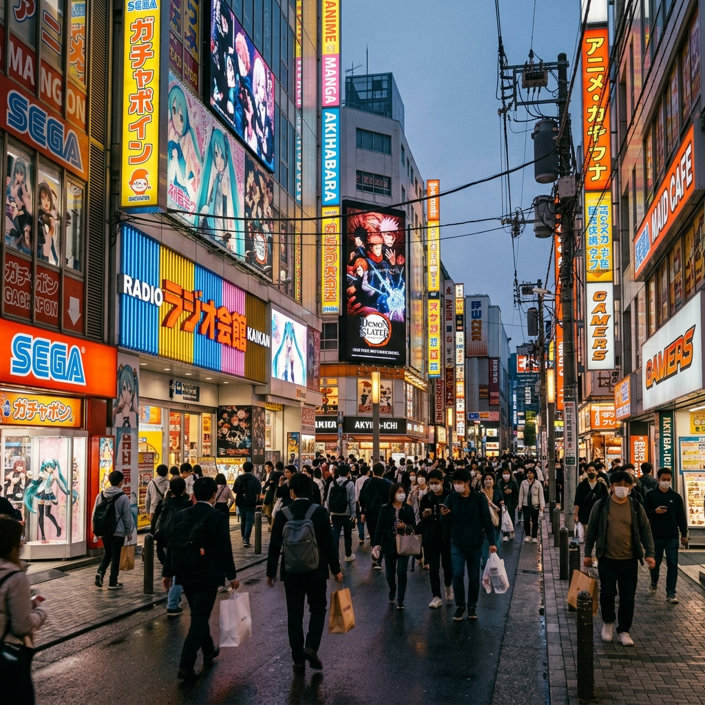
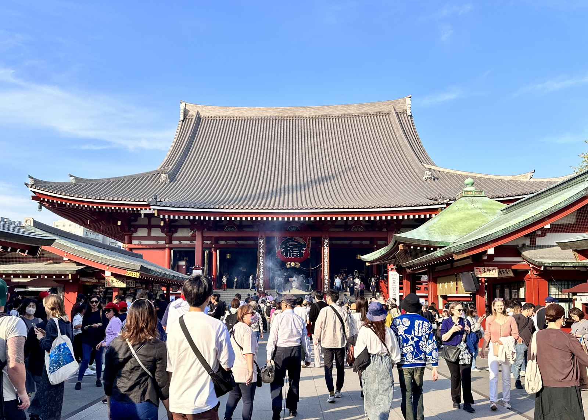
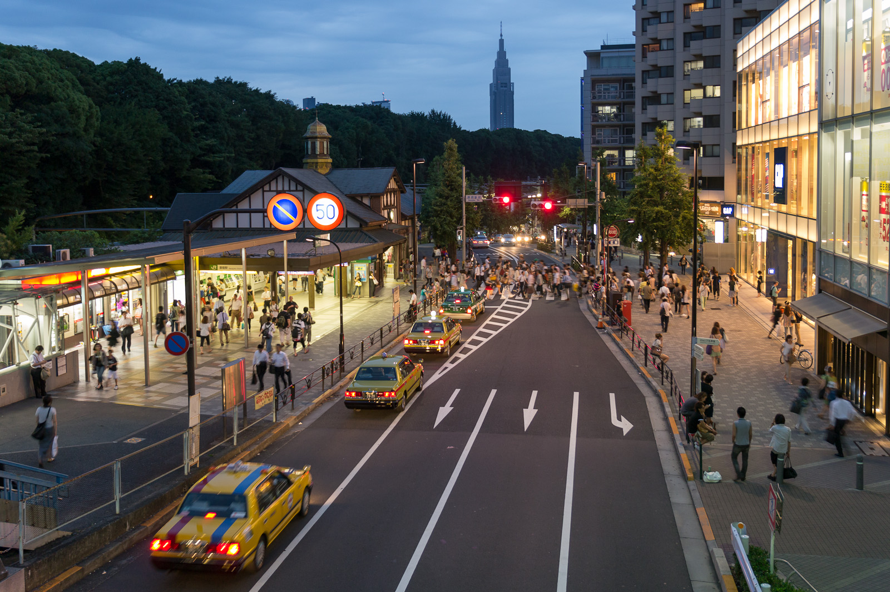
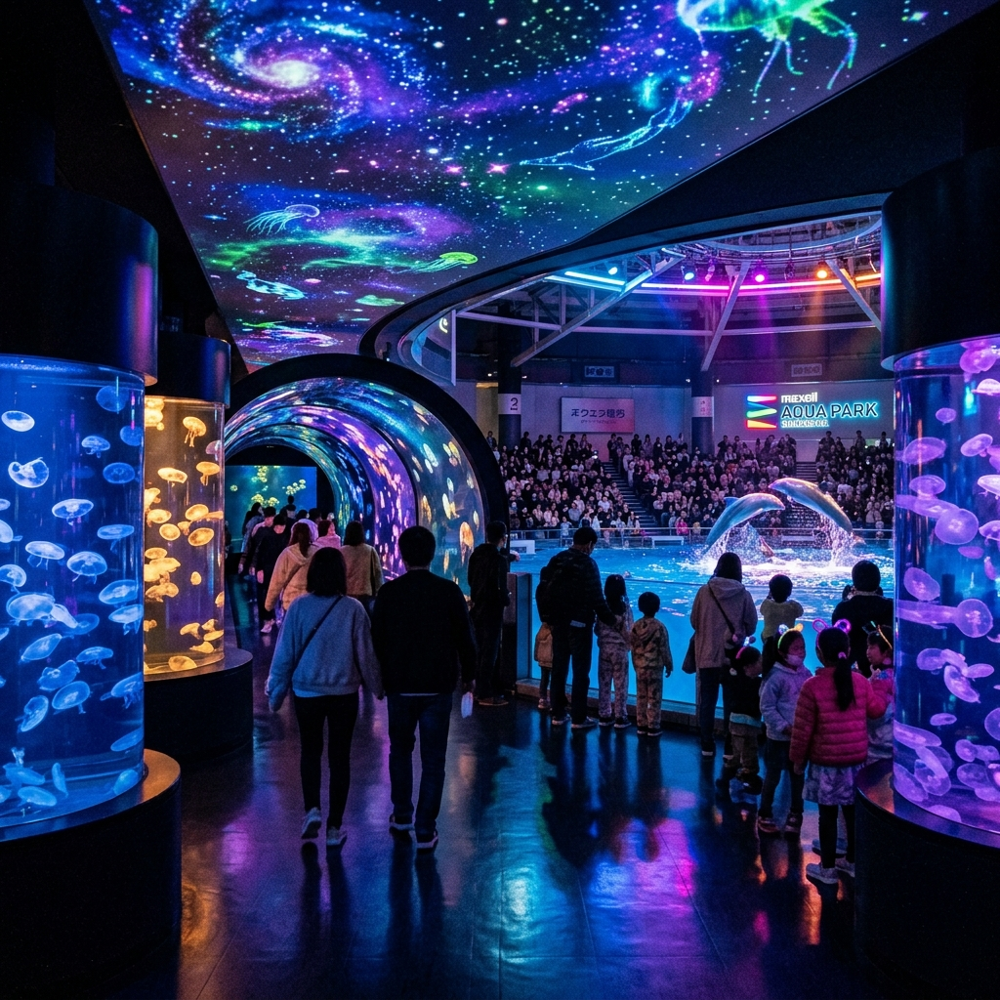
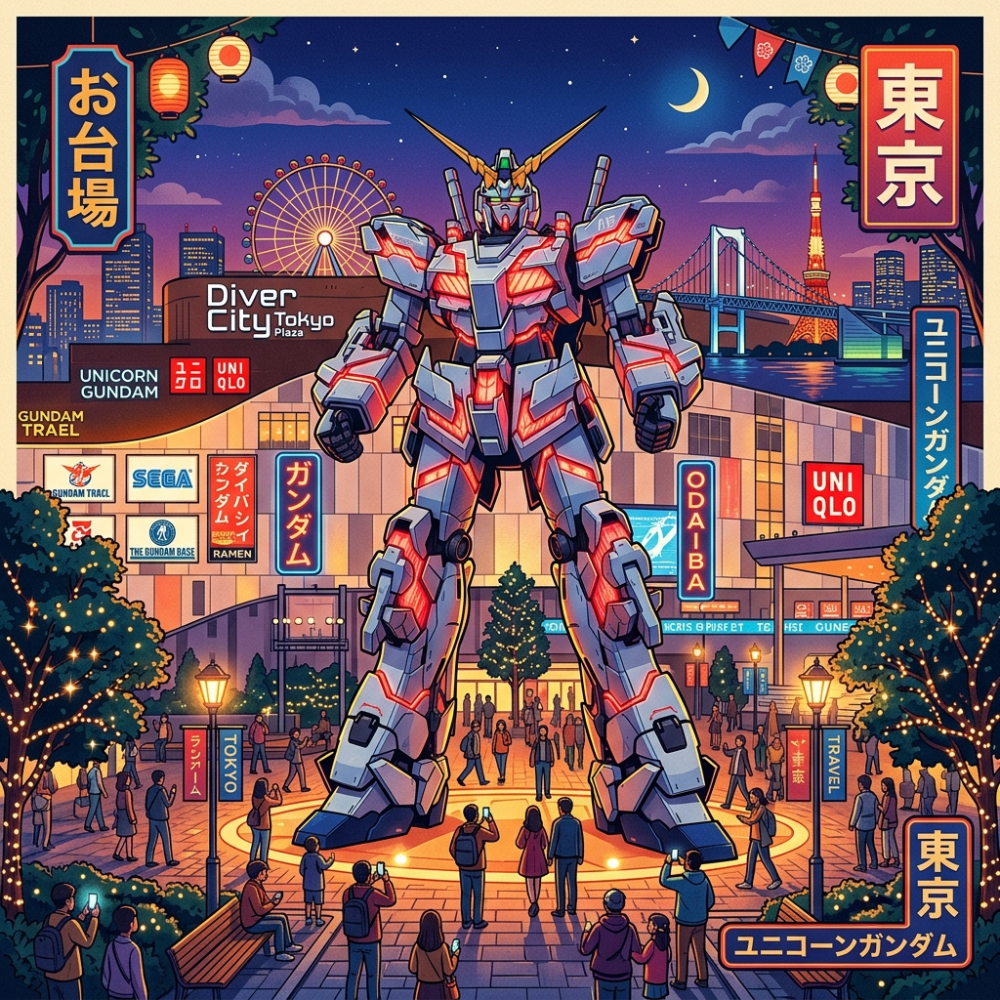

Winnie 一家四口專用 • 6天5夜全攻略 (7/3 - 7/8)
先看這裡掌握每天主線。景點故事、備選安排、購物和交通細節都放在「旅行手冊」內，避免主行程被淹沒。
視通關和取行李情況，預留 45–90 分鐘。
不再加景點，將這天當作恢復日。
抵達時間較晚，JR 東日本旅行服務中心已關門。Adult Welcome Suica 可視乎機場自助售卡機情況再決定；Child Suica 需於櫃台營業時段帶護照辦理。
官方現時列出的 T3 往酒店班次包括 22:25 / 23:05 / 23:55 / 00:55，先到先上。以你們這班機來看，23:05 最有機會；若人多或行李慢，仍有後續班次可接。
到酒店後若想買宵夜、飲品或翌日早餐，最近是步行 1–2 分鐘的 Lawson；FamilyMart 約 3–5 分鐘，7-Eleven 約 5–7 分鐘並可用 7-Bank ATM 提現。
3件大行李下，體力比車費更重要。
把第一個完整白天做成兒子和女兒都能各有亮點的簡單路線。
晚上回酒店泡溫泉，不把這天做成衝刺日。
Animate 池袋官方現時為每日 10:00–21:00。Sanrio Cafe Ikebukuro 官方商店頁顯示現時一般營業至 21:00，但仍以當日公告為準。
若孩子想再加室內內容，最順路是 Sunshine Aquarium、TENBOU-PARK、NAMJATOWN 或 Bandai Namco Cross Store。
先完成固定安排，再往東京站移動。
補足池袋 Mega Center 關閉後的 Pokémon 主場。
把 Nintendo 時間換成更適合這一家人的動漫內容。
最穩陣的英文主日彌撒選項是豐島天主堂 12:00 英語，或聖伊納爵天主堂 12:00 英語。現階段不建議把中文彌撒寫入主線。
Pokémon Cafe 仍是預約制；若只去商店則可照常前往。Character Street 內也可順手找 mofusand 常設店。
主打江戶感和鬼滅氛圍，中午前後離開避熱。
有體力再加表參道，不強行塞滿。
可重返 Sunshine City 或在酒店附近簡單晚餐。
淺草主線建議安排在上午完成。若太熱，可直接插入 Asakusa Culture Tourist Information Center 展望台或提早轉往原宿。
若全家狀態好，淺草可順加 TOKYO mizumachi / Sumida River Walk；若女兒想集中可愛購物，下午主攻 Kiddy Land 即可。
先把大行李問題處理完，再開始景點。
全室內，適合 7 月熱天和孩子節奏。
把最後一個完整晚上留給輕鬆散步和打卡。
鋼彈白天變身一般為 11:00 / 13:00 / 15:00 / 17:00；夜間 19:00–21:30 每 30 分鐘一場，但節目內容會更新，當日以官方為準。
若天雨或孩子還有力，可在台場區加入 Gundam Base、Daiba 1-chome、LEGOLAND Discovery Center 或 DECKS 內用餐。
最後一天不建議再拉遠線。若只是補貨，優先選酒店附近超市、藥妝或機場商店，把機場緩衝放在前面。
這裡分兩層閱讀：先看每天的 Morning / Afternoon / Evening 安排與關鍵提醒，再看下面的景點說明、備選方案與購物貼士。這樣不會只有大圖，卻找不到行程骨架。
21:35 抵達羽田 T3，出關連取行李預留 45–90 分鐘。
直接去酒店，這天不再加景點，重點是順利入境與睡眠。
JR 東日本旅行服務中心現時 20:00 關門，這晚不能假設一定可在櫃台辦理 Child Suica。
把這晚當成純抵達流程。重點不是逛機場，而是順利入境、找到接駁車、平安到酒店休息。
21:35 落地；約 21:45 離機；21:50–22:15 入境；22:15–22:30 取行李；22:30–22:40 海關；約 22:40 正式到達 Arrival Lobby。若當晚人流較少，22:30 左右也有機會已經出到大堂。
先完成入境、洗手間和基本補水，之後直接往酒店接駁車。不要把第一晚設計成購物或交通研究時段，因為第二天還要搬酒店去池袋。
出關、領取行李後的步驟：
過海關後你會到 T3 二樓 Arrival Lobby。保持一直向前，跟著 Haneda Airport Garden 方向走；途中會經過京急和東京單軌電車入口。到 Airport Garden 門口後，乘扶手電梯或升降機下到 1F，再找寫著 Hotel JAL City Haneda Tokyo 的接駁車。
West Wing 和主樓共用同一架車，所以只要看到 Hotel JAL City Haneda Tokyo 就是對的。以 CX542 這種 21:35 抵達班機來說，23:05 通常最有機會；若入境或行李較慢，後面還有 23:55 / 00:55 可接。
若滿座或錯過接駁車，直接去的士排隊即可。車程約 10 分鐘，費用大約 ¥2,200–¥3,000。這晚的正確選擇是快速到酒店，而不是硬等不確定的班次。
若到酒店後要補買水、飯糰、杯麵或第二天早餐，最近是步行 1–2 分鐘的 Lawson；FamilyMart 約 3–5 分鐘；7-Eleven 約 5–7 分鐘，並可用 7-Bank ATM 提現。
JAL 旗下精品酒店，毗鄰羽田機場。以「空港日式旅館」為主題，融合現代設計與日式傳統美學。晚抵東京後不用轉車，步行或乘免費接駁直達，適合帶著孩子疲憊入住。
| 接駁班次 | 現時官方 T3 晚間班次包括 22:25 / 23:05 / 23:55 / 00:55；先到先上，滿座便需改乘的士。以 CX542 這種 21:35 抵達班機來說，23:05 通常最有機會搭到。 |
| 酒店地址 | 東京都大田區羽田旭町4-16 / 03-5735-2525 |
| 退房時間 | 11:00（標準退房；翌日早餐後搬往池袋） |
酒店早餐後直上池袋，先解決大行李與 check-in 問題。
Animate 池袋旗艦店加 Sanrio Cafe 午餐，兒子和女兒都先有主場。
Sunshine City、扭蛋、角色商店，之後回酒店溫泉，不把第一個完整白天做成衝刺日。
全球最大型的動漫周邊商品旗艦店！整棟大樓開滿了各式動漫商品、展覽和聯名專櫃。兒子最心儀的鬼滅之刃手辦和限量周邊在這裡非常齊全。
| 營業時間 | 10:00–21:00 (週末/假期) / 11:00–21:00 (平日) |
| 地址/電話 | 東京都豊島區東池袋1-20-7 / 03-3988-1351 |

專為 Sanrio 粉絲設計的夢幻咖啡廳。提供玉桂狗 (Cinnamoroll) 主題拿鐵、漢堡及布丁。女兒看見一定會尖叫的網紅打卡位！
| 營業時間 | 官方商店頁目前顯示一般營業至 21:00；到訪前再看當日公告較穩妥。 |
| 消費預算 | 人均約 ¥1,000–¥2,000 |
1. 陽光水族館 (Sunshine Aquarium) ★★★★☆
位於 Sunshine City 頂樓，以「天空綠洲」為概念，可以看見企鵝在您頭頂的透明水槽中游動。現時成人票約 ¥2,600–¥3,200，中小學生 ¥1,300，價格按日期浮動。
2. 陽光60展望台 (TENBOU-PARK) ★★★★☆
11:00–21:00，最後入場 20:30。若中午太熱，這裡是很順路的室內休息位。
3. NAMJATOWN / Bandai Namco Cross Store ★★★★☆
兩者都在 Sunshine City 系統內，都是極低摩擦的室內加點。前者偏親子玩樂，後者偏角色商品、扭蛋和展區。
4. 無敵家拉麵 (Mutekiya) ★★★★★
池袋最出名的濃郁豚骨拉麵店。建議避開正餐時間，否則排隊成本很高。
先完成主日彌撒，再往東京站 / 日本橋區移動。
東京站午餐後進 Pokémon Center TOKYO DX 與 Character Street。
秋葉原集中處理鬼滅、模型、二手收藏與卡牌，不再硬塞 Nintendo 動線。


位於高島屋東館。擁有全日本最震撼的巨型寶可夢模型，包括卡比獸與皮卡丘。兒子買卡牌、公仔的終極聖地！
| 營業時間 | 10:30–21:00 |
| 地址/電話 | 東京都中央區日本橋2-11-2 高島屋S.C.東館5F |

動漫文化的心臟地帶。出站即可看見 Radio Kaikan (收音機會館)，整棟樓開滿了手辦、卡牌和玩具專賣店。兒子一定能找到他最愛的鬼滅之刃限量周邊。
1. Pokémon Cafe 預約提醒 ★★★★★
官方仍是預約制，當天 8:00 前若有空位仍可在系統訂位；沒有位也可只逛店和買部分外帶或商品。
2. 東京站一番街的 mofusand 常設店 ★★★★☆
如果女兒在 Day 3 已經看到喜歡的 mofusand 角色物，下午去原宿時壓力會低很多。
3. 神田明神 (Kanda Myojin Shrine) ★★★★☆
秋葉原附近的千年歷史神社，若全家還有體力可作短線文化補充。
4. Yodobashi Akiba (友都八喜巨型電器城) ★★★★★
位於秋葉原站東口，擁有巨大的扭蛋玩具區和兒童玩具樓層。累了還可以去 8 樓的美食街用餐。
5. 六厘舍沾麵 (Rokurinsha) ★★★★☆
位於東京站地下拉麵街，適合做午餐或返程前的重口味一餐。
雷門、仲見世、淺草寺、小食與拍照，主打經典東京與鬼滅氣氛。
轉往原宿 Kiddy Land 與角色購物，把女兒的可愛精品主線放進正式行程。
7 月中午易暴曬，淺草盡量上午完成；要休息就優先找室內點，而不是硬撐步行。

把缺漏的淺草正式放進主線。雷門、仲見世、淺草寺一段最能補足「經典東京」和「鬼滅氛圍」的感覺，也比把整天都放在單一購物區更有層次。
| 上午動線 | 雷門 → 仲見世商店街 → 淺草寺 → 小食休息 → 視體力離開 |
| 體感策略 | 7 月正午前後很熱，建議中午左右轉往原宿或室內商場，避免在淺草曝曬過久。 |

下午接原宿，讓文化日不只停在拍照，還能補上女兒最喜歡的角色購物。Kiddy Land 是主點，有體力再加表參道一段即可，不需要把這區做成暴走逛街。
| 主力店 | Kiddy Land、角色快閃店、表參道沿線精品店 |
| 節奏建議 | 先完成 Kiddy Land，再視孩子精神決定是否續逛，傍晚可直接回池袋。 |
1. Asakusa 文化觀光中心展望台 ★★★★☆
就在雷門對面，免費入場。若想俯瞰仲見世與淺草寺，這是低成本又很順路的補充點。
2. TOKYO mizumachi / Sumida River Walk ★★★★☆
若上午進度快、天氣又未太辛苦，可作為淺草邊緣延伸，氣氛較開揚，但仍建議視熱度決定是否加入。
3. 川越替代版 ★★★★★
如果更想要老街、和服和番薯小食，川越仍然是很好的文化日替代方案。它保留在手冊中，避免主線同時出現兩個版本。
4. 回池袋補逛 Sunshine City ★★★★☆
這天傍晚回池袋後，可把 Day 2 沒逛完的角色商店和扭蛋補完，保持整趟旅程的節奏鬆一點。
先處理退房與行李，把人和大件物件分離，之後路線才會輕鬆。
Maxell Aqua Park Shinagawa 作為冷氣充足的核心景點。
傍晚轉去台場，配合鋼彈演出、海濱夜景與晚餐，留一個輕鬆的最後完整晚上。

結合現代聲光投影技術的超人氣市內水族館。最矚目的是伴隨音樂、水幕與炫彩燈光的 海豚表演秀 (Dolphin Show)。全館位於室內，冷氣開放，非常適合炎熱的 7 月天。
| 門票價格 | 成人 ¥2,500 / 中小學生 ¥1,300 / 兒童 (4歲以上) ¥800 |
| 溫馨提示 | 海豚秀前排座位會被淋濕，建議購買雨衣 (¥100) 或坐後排。 |

位於 DiverCity 商場廣場，1:1 等身比例的 Unicorn Gundam。每日定時會有「毀滅模式」變身演出（晚上配合牆面投影更震撼）。商場內有 Gundam Base 旗艦店和各種動漫品牌。
1. 台場一丁目商店街 (DECKS Tokyo Beach) ★★★★☆
位於 DECKS 商場 4 樓，完全重現日本昭和風街景。若想讓孩子在購物以外有點小遊戲，這是很順路的輕加點。
2. 樂高探索中心 (LEGOLAND Discovery Center) ★★★★☆
官方常見時段為平日 10:00–18:00、週末及假日可延至 19:00；下雨天尤其實用。
3. THE GUNDAM BASE TOKYO ANNEX ★★★★☆
就在 DiverCity 2F，若兒子對鋼彈模型有興趣，這比單看廣場打卡更完整。
4. Bills 鬆餅 (Bills Odaiba) ★★★★★
位於 DECKS 3 樓，窗邊正對 Rainbow Bridge。若想把最後一晚做得舒服一點，這是氣氛很好的晚餐或早晚茶位。
只做近距離補貨，不再安排遠線景點。
13:30 左右到羽田 T3，預留行李託運與最後伴手禮時間。
若計劃前往川崎 Costco 買零食/保健品，請提早叫的士前往。若想行程輕鬆，可留在酒店 (Haneda) 周邊的 Life 超市或藥妝店作最後衝刺。
搭乘酒店接駁巴士或的士 (約 10 分鐘) 直達航廈。辦理行李託運後，在機場免稅店買伴手禮（白色戀人、Royce 朱古力等），乘機回港。
點選打勾，狀態會自動記錄在您的手機中 (刷新或關網頁也不會消失)！
外國遊客專用卡特點：
1. 無押金：不需要扣除 ¥500，餘額可全數用來乘車或在超商消費。
2. 28天有效期：過期後卡內餘額不能退還，請在最後一天於機場免稅店將餘額刷完。
3. 👧 8歲女兒辦 Child Suica (半價卡)：乘車和巴士均自動半價。需以護照核實年齡；羽田 T3 的 JR 東日本旅行服務中心現時營業至 20:00，深夜到達時不要假設櫃台一定可辦。
1. JR山手線及普通地鐵行李政策：
無須像新幹線一樣預約行李位，所有大行李均可免費攜帶上車。但請務必避開平日通勤高峰時間 (07:30–09:00)，否則地鐵內擁擠，拖行李會極為不便。
2. 搬酒店日的最佳安排 (7/4 早上)：
羽田機場 JAL City ➔ 池袋 Super Hotel。由於有 3 件大行李和 2 個孩子，強烈建議直接搭乘的士 (或叫 Uber Premier Van)。車程約 40 分鐘，費用約 ¥10,000–¥12,000，能省去轉車、拖行李上下樓梯的痛苦。
日本面積最大、裝潢最精緻的寶可夢中心。門口迎客的巨型卡比獸與皮卡丘是極佳的拍照點。
1. Animate 池袋旗艦店 (二樓)：設有極大的鬼滅之刃專區，漫畫、鑰匙圈、徽章等周邊最齊全。
2. 秋葉原 Radio Kaikan (收音機會館)：出站即達。整棟樓聚集了數十家手辦二手機及卡牌專賣店（如 AmiAmi、K-BOOKS）。建議在這裡貨比三家，可以淘到許多絕版或特價的鬼滅模型。
1. 東京站一番街 (Tokyo Character Street)：設有 mofusand もふもふストア 以及大耳狗/三麗鷗專賣店，一站式買齊女兒心儀的角色公仔和文具。
2. 原宿 Kiddy Land：最適合放在淺草之後的下午，角色精品集中，補貨效率高，也比較符合女兒主線。
3. 池袋 Sanrio Cafe：位於陽光城，主打卡通造型的甜品和咖啡拉花，精緻又好玩。
日本許多地鐵加值機、小吃店和部分神社只收現金。日元不夠時可在任何一間 7-Eleven 提款：
東京 7 月平均已偏熱而且濕度高，近年炎夏日子常會衝上 34°C 以上。帶孩子旅遊時：
✓ 確保每人有一部手持風扇。
✓ 白天多安排水族館、商場等室內冷氣充足的景點。
✓ 隨身攜帶保溫瓶，在便利店買冰水或運動飲料補充電解質，防範中暑。